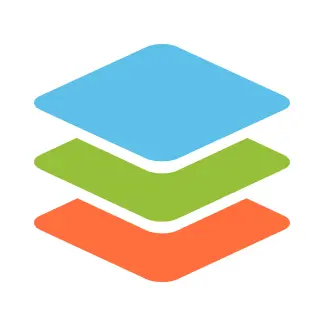
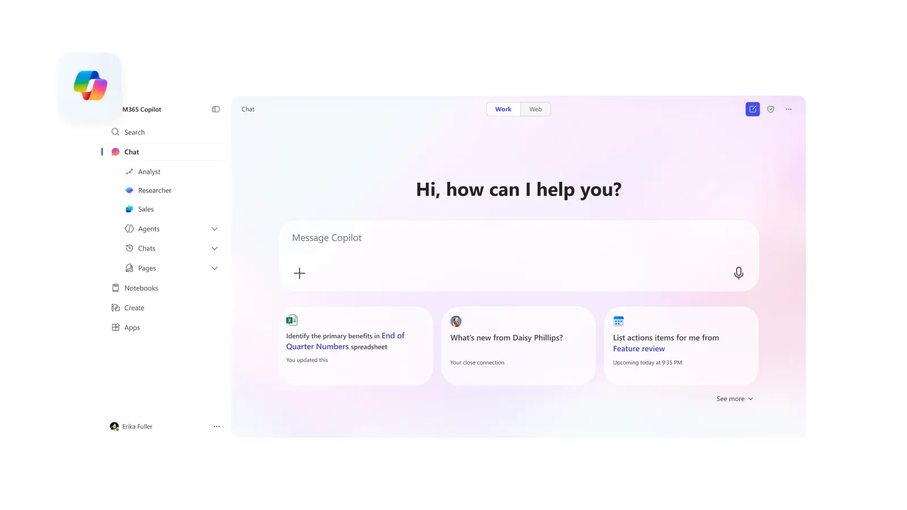
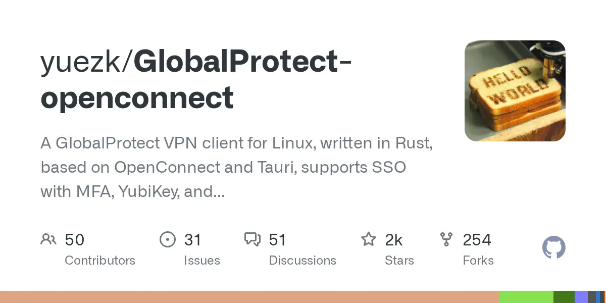
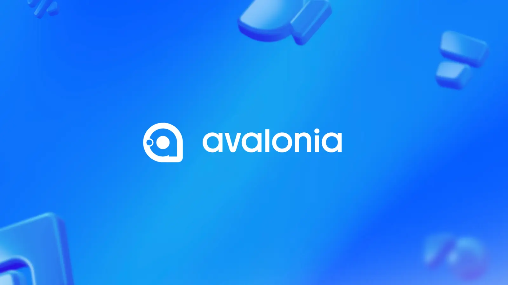
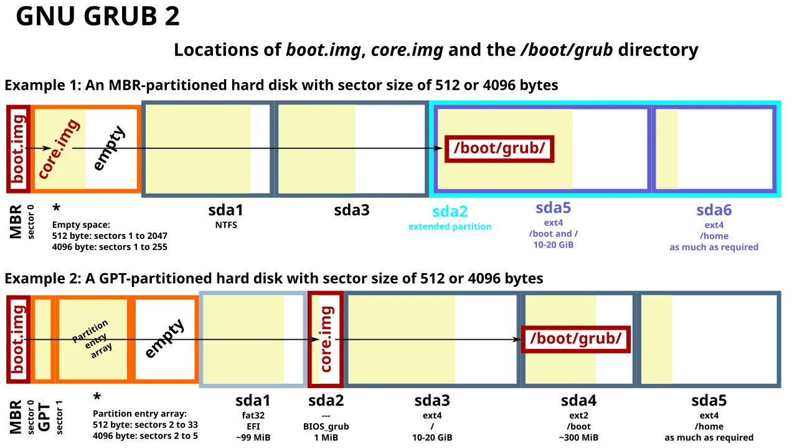
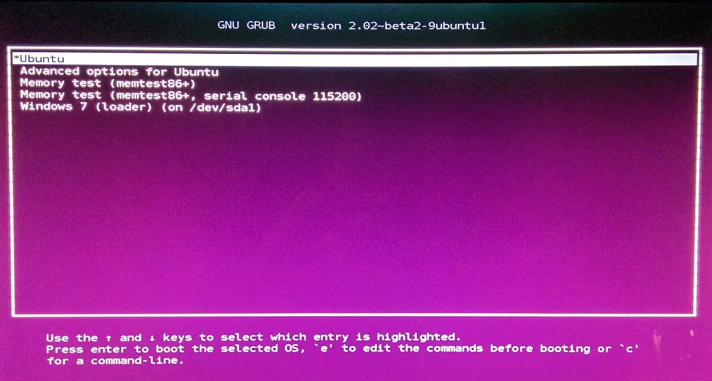
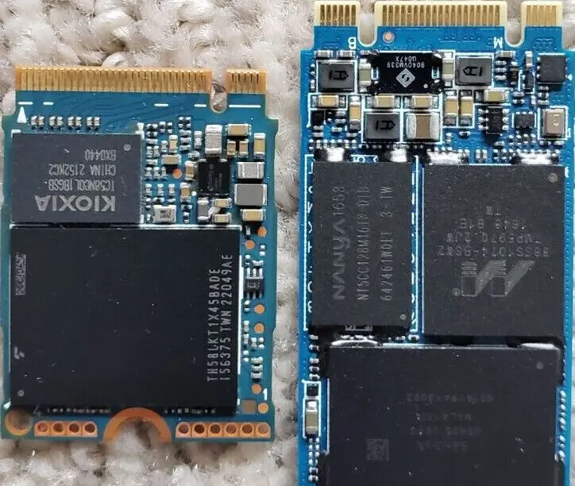

Windows → Linux
Flight Plan

Master caution
items that do not cross overThere is no native Linux Office; the web apps are the only supported route, with no VBA, no add-ins, no offline, and degradation on large workbooks [3][4]
Thunderbird 145+ speaks Exchange for mail only — calendar and contacts are roadmap, Graph is unimplemented [5]
Load manifest
rated by what happens when you tryPriority cargo first — the six pieces that carry the working day. Then the full manifest: what boards, and what gets left at the gate for the Windows partition.

ASP.NET, libraries, tests, containers, .NET 10 / C# 14. Free non-commercially; a paid licence for work [16]

OOXML is its native internal format, not an import filter — best .docx/.xlsx fidelity for files you trade with Windows colleagues [8][9]

The only officially supported route on Linux — and your primary mail client, since Outlook Web is the one thing that keeps working [3]

SSO, MFA, YubiKey on top of OpenConnect, which covers AnyConnect, GlobalProtect, FortiGate and F5 [24][25]

New cross-platform work here; Avalonia XPF lifts an existing WPF app across — commercial, and a port rather than a recompile
boarding Crosses over
Get-WmiObject is gone and the CIM cmdlets were never ported off Windows — anything WMI, registry, AD or COM stays behind [19]eid-mw + eid-viewerleft at the gate Stays on Windows
msdb [1]EnableWindowsTargeting=true lets CI build them on Linux — it does not let you run or design them [17]Documents you author → OnlyOffice. Documents with macros or Power Query that someone else owns → Windows VM or Cloud PC. Don't try to port a business-critical macro workbook; it is the single most common reason a switch reverses.
Fuel & load sheet
escape hatches, ranked by what they cost| Hatch | Good for | Cost / caveat | Weight |
|---|---|---|---|
| Web app | 80% of the office layer — M365 web, Outlook Web, Photopea | Free, zero maintenance, no offline, no macros [4] | light |
| Wine / Bottles / CrossOver | Office 2016 and older, Affinity, small vendor utilities | Office 365 / 2021 / 2024 don't work reliably — click-to-run installers defeat Wine, and Outlook/OneDrive/OneNote are broken or absent [28] | medium |
| WinApps / WinBoat | Modern Office, Access, any single stubborn Windows app | Individual Windows windows appear on your Linux desktop over RemoteApp/RDP with MIME and menu integration — far higher compatibility than Wine, at the price of running a Windows VM [29] | heavy |
| Full VM under KVM | Visual Studio proper, SSMS, .NET Framework, posture-checked VPN | Best hypervisor on Linux: VirtIO, low overhead, real PCI passthrough. VirtualBox's 3D and passthrough are markedly weaker [30] | heavy |
| GPU passthrough (VFIO) | Near-native graphics inside the VM | Single-GPU passthrough takes your GPU away from the host — the Linux desktop goes dark until the VM shuts down, on top of fiddly IOMMU/vBIOS setup [31] | overweight |
| Windows 365 Cloud PC | The compliance or legacy app you touch monthly | Any HTML5 browser, no client needed [32]. Business runs ~$28–$56/user/month after the May 2026 cut; Enterprise starts near $31 and scales past $120 [33] | recurring |
| Keep a Windows partition | Everything above, at zero recurring cost | Windows 11 is fine. On Windows 10, support ended 14 Oct 2025; consumer ESU (settings sync, 1,000 Rewards points, or $30) runs until the programme closes 12 Oct 2027 [34] | disk only |
For this profile: dual-boot Windows for Visual Studio designers, SSMS Agent and macro workbooks — and don't bother with GPU passthrough.
Weight & balance
where the data is allowed to sitThe Linux client tracks files through extended attributes and supports only unencrypted ext4 for the sync folder [41]. This is the sharpest constraint in the whole migration:
- The Dropbox folder cannot live on NTFS, exFAT, btrfs or ZFS. If you were planning btrfs snapshots, keep at least one ext4 volume.
- ext4 inside a LUKS container is fine — LUKS is block-level and invisible to Dropbox. ext4's own file-based encryption (
fscrypt) is not [41]. - It also needs an AppIndicator-capable tray — GNOME requires an extension [42].
- The in-kernel
ntfs3driver has a track record of freezes and corruption;ntfs-3gis slower and safe [39]. - Treat NTFS partitions as an archive to drain, then convert to ext4/btrfs once the data is verified elsewhere.
- Native read-write kernel support, works from both OSes [40].
- No POSIX permissions and no extended attributes — which is exactly why Dropbox can't use it.
Crew documents
carry these across in this orderCopy ~/.ssh, then chmod 700 ~/.ssh and chmod 600 ~/.ssh/id_*. Wrong permissions are the #1 "my key doesn't work".
gpg --export-secret-keys --armor on Windows, gpg --import on Linux, then gpg --edit-key <id> trust. Never copy private-keys-v1.d between versions.
Sign in to sync rather than copying profile directories across OSes. On Ubuntu, install a non-Snap Firefox if you need eID [7].
Put them in a git repo with a bootstrap script now — you will run it at least twice during a staged migration.
Type-rating credit
what your WSL2 hours actually buyWSL2 makes you competent at the Linux userland and leaves you a beginner at the Linux desktop. Budget the learning time accordingly: the surprises will be graphical, audio and power management — not shell.
- bash, coreutils,
apt/dnfmuscle memory - Docker, Compose and CLI workflows — and they get faster: ~0.3s container start native vs ~1.2s on WSL2, container filesystem ops 3–5× quicker [43]
- Shell scripting, ssh, git, editors
- General comfort at the command line
- The desktop stack: X11 vs Wayland, compositor, portals, PipeWire audio, theming — WSL2 taught you none of it
- Hardware: printers, Bluetooth, webcam, sleep/resume, fingerprint readers, monitor hotplug, GPU drivers
- Networking: WSL2 defaults to NAT and is isolated from the host stack; native Linux gives you bridged/host networking and real interfaces [44]
- USB/GPU passthrough, kernel modules, init-system and system-wide tinkering [43]
Departure sequence
four phases, two hard gatesList every app you opened in the last 90 days and mark each ✓ / ⚠ / ✗ against the manifest above. Anything ✗ must have a named hatch from the load sheet before you go further.
- Print the BitLocker recovery key — on paper, not on the machine
- Activate itsme while a working Windows box is still in front of you
- Push dotfiles to git with a bootstrap script
- Export GPG secret keys; verify 2FA recovery on your phone
- Decide where the Dropbox folder will live — it needs its own unencrypted ext4 volume

Boot the candidate distro from USB without installing. This tests hardware — the failure mode you cannot fix later by changing software.
- Wi-Fi and Bluetooth work without hunting for firmware
- External monitor at the right resolution and refresh; laptop scaling readable
- Suspend and resume, twice — lid close, lid open
- Audio out and mic in, plus headset switching
- Teams PWA screen share picks up a window and a full screen [13]
- Webcam in a browser call
- Trackpad gestures and fn-keys — brightness, volume

xdg-desktop-portal/PipeWire leaves the picker empty or crashes the browser, and the Wayland-vs-Xorg session choice changes the outcome [13]. Test it on day one, not week three.
NOTAMs
read before you touch a partition tabletimedatectl set-local-rtc 1, or set Windows to UTC. Fix it once or it erodes your patience daily.Shrink Windows from inside Windows (Disk Management), leaving ≥ 80 GB for Linux plus a separate /home. Suspend BitLocker, disable Fast Startup, reuse the ESP, install Linux second [36][35]. Fix the RTC immediately [38]. Put /home — or at minimum the Dropbox folder — on ext4 [41].
Then do real work on Linux, and log every reboot into Windows and why. That log is the instrument you read at Gate 2 — not your mood.

- Full .NET solution builds, tests run, and the debugger hits breakpoints in Rider
- Docker and Coolify deploys work end to end
- SQL Server container up, MSSQL extension connects, schema compare works [1][2]
- Corporate VPN connects and survives a sleep cycle [24]
- eID reads your card in a non-sandboxed browser and a real government or bank flow completes [26][7]
- Dropbox reports "Up to date", not a filesystem warning [41]
- You joined a Teams meeting, shared a screen and presented — twice
- Printing and scanning work, if you need them
- Windows reboot log ≤ 2 in the final week, every entry mapping to a known ✗ item
Don't wipe Windows. Shrink it to ~80–120 GB and keep it for Visual Studio designers, SSMS Agent, macro workbooks and any posture-checked VPN. Give Linux the rest.
- Convert one reclaimed NTFS partition to ext4/btrfs once you've verified the data is elsewhere [39]
- Booting Windows less than monthly after three months → convert it to a KVM guest and reclaim the disk [30]. A VM you can snapshot beats a partition you have to reboot into
- Keep the reboot log running — it is your only honest signal about whether the alternate is still needed

If at any point you're spending more than ~2 hours a week fighting the desktop rather than working, go back to Windows for the quarter and retry after the next LTS or kernel release. The migration is cheap to repeat and expensive to force.
Filed documents
44 sources · the load-bearing onesofficial · [1]
official · [2]
vendor blog · [5]
vendor blog · [15]
official · [7]
official · [26]
wiki · [36]
forum · [35]
news · [41]
news · [39]
forum · [13]
news · [43]
news · [29]
official · [32]
official · [34]
forum · [28]
Other legs of this route
seven angles filed under one expeditionFive real families; the honest shortlist is Fedora Workstation, Ubuntu LTS, Mint, Bluefin/Aurora and Tumbleweed.
Start on a 6-month fixed release or an atomic Fedora image; avoid pure rolling and Debian stable.
Ubuntu 26.04 LTS and Fedora 44 tie on setup effort for .NET 10 + TypeScript + Docker.
KDE Plasma is the lowest-friction landing spot for a Windows 11 developer; X11 sessions die this year.
Only NVIDIA, very new silicon and Secure-Boot dual-boot still force a distro choice.
Atomic Fedora and Ubuntu/Mint LTS are near-zero chore; Arch costs a reading habit.
~90% of Steam titles run under Proton; kernel anti-cheat and DRM streaming above 720p do not.